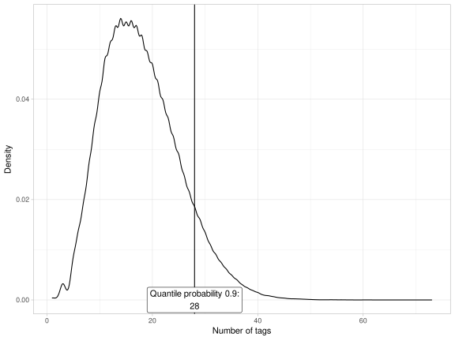
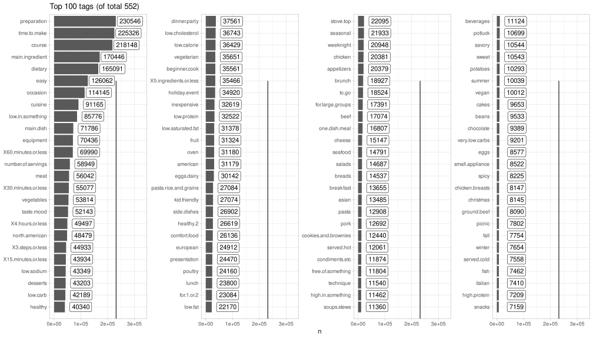
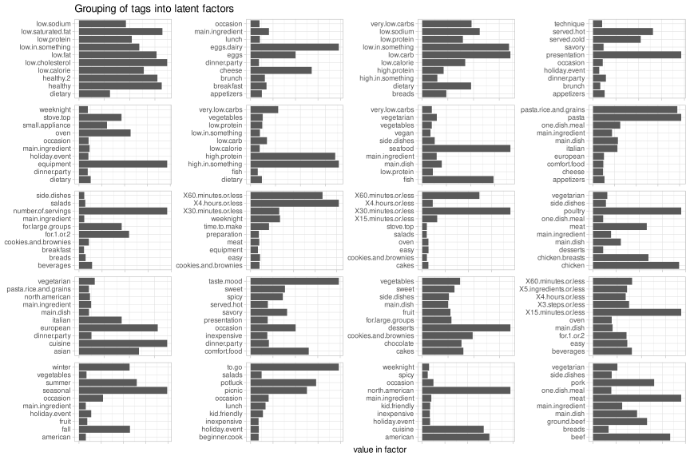

Introduction
I’ve been working on my R package,
tyecon for some time now. I think it
can be a useful tool in performing day to day data analysis tasks. The idea is
very simple: More higher order macros. There’s no reason to focus on
the handful of existing ones, like the magrittr pipes or the dplyr syntax.
We have a language here that supports lazy evaluation and first class
functions. This is all we need to make programming life easier.
Data analysis tasks are quite unique. And it’s not always clear what the best
approach towards writing less code could be. Nevertheless, I think searching
for such possibilities is a legitimate endeavour, hence tyecon.
In this first part of the “Journey through tyecon” series, I explore the tags
found in the
Food.com
dataset. I forgo mentioning specifically when I’m using any tyecon
functionality, but that should be obvious from the code.
Setup and Data Import
library(tidyverse)
library(tidyselect)
library(magrittr)
library(glue)
library(vroom)
library(rlang)
library(tyecon)
knitr::opts_chunk$set(fig.path = "")
knitr::opts_chunk$set(dev = 'svg')
theme_set(theme_light())
set.seed(123)
recipes <- vroom("~/Workspace/foodrecipes/RAW_recipes.csv")
interacts <- vroom("~/Workspace/foodrecipes/RAW_interactions.csv")
Tags
tags <- recipes %->% {
select(id, tags)
mutate(tag = str_replace_all(tags, "[\\[\\]\\']", ""))
select(-tags)
mutate(tag = ifelse(tag == "", NA, tag))
separate_rows(tag, sep = ", ")
# convert to conventional R names
mutate(tag = make.names(tag))
}
Number of tags density plot:
tags %->% {
group_by(id)
summarise(n_tags = n())
} %$% {
quantprob <- 0.9
quant <- quantile(n_tags, quantprob)
ggplot(., aes(n_tags)) +
geom_density() +
geom_vline(xintercept = quant) +
annotate("label",
quant, 0, label = glue("Quantile probability {quantprob}:\n {quant}")
) +
xlab("Number of tags") +
ylab("Density")
}

Therefore, We would still need a lot of tags for basic exploration of our data. Let us first create the tag dummies for each submitted recipe:
tags_dummies <- tags %->% {
add_count(tag)
arrange(desc(n))
select(-n)
mutate(tagged = 1)
pivot_wider(names_from = tag, values_from = tagged, values_fill = 0)
# keep id as metadata
ids <- id
select(-id)
set_attr("ids", ids)
}
The columns of the above data frame are thus sorted in order of tag frequency.
The strategy is to identify how much of the data is covered by a list of tags, and to append the list with a new tag and recompute the coverage rate. Starting from highly popular tags quickly culminates in a coverage rate of 1, so we are instead interested in whether a less popular subset still covers all of our observations.
Consequently, let’s assume a coverage rate of 1 for the first few tags and then compute the coverage rate from thereon:
tags_coverage <- tags_dummies %->% {
start <- 11
coverage_name <- as.character(glue("coverage_{start}"))
head_names <- names(.)[1:start - 1]
extract(start:100)
nrows <- nrow(.)
accumulate(`+`)
map_dfc(~ length(which(. != 0)) / nrows)
pivot_longer(everything(), values_to = coverage_name)
{ bind_rows(tibble(name = head_names, "{coverage_name}" := 1), .) }
}
tail(tags_coverage)
## # A tibble: 6 × 2
## name coverage_11
## <chr> <dbl>
## 1 winter 0.999
## 2 served.cold 0.999
## 3 fish 0.999
## 4 italian 0.999
## 5 high.protein 0.999
## 6 snacks 0.999
Therefore, it seems the first 100 tags would be sufficient for the analysis.
A Look at the 100 Most Popular Tags
tags %->% {
count(tag)
arrange(desc(n))
head(100)
mutate(buckets = desc(ntile(n, 4)))
} %>%
ggplot(aes(fct_reorder(fct_reorder(tag, tag, .desc = TRUE), n), n)) +
coord_flip() +
facet_wrap(vars(buckets), nrow = 1, scales = "free_y") +
geom_col() +
geom_label(aes(label = n), hjust = "right", nudge_y = 100000) +
ggtitle(glue("Top 100 tags (of total {n_distinct(tags$tag)})")) +
annotate("segment",
y = nrow(tags_dummies), yend = nrow(tags_dummies), x = 0, xend = 20
) +
theme(
axis.title.y = element_blank(),
strip.text.x = element_blank()
)

Feature Extraction from Tags
From the chart, we can identify some useful tags. Of course, tags that already cover a good proportion of the data are useless as they introduce little variation for identification. Each tag on its own is also useless because apart from the first few tags, each tag has very little coverage of the data. Rather, we are looking for complementary tags or subsets that give good coverage of the data. We can use exploratory factor analysis to identify such latent factors. Of course, we could use PCA as well. One could even argue that since each tag is a category, we need to use multiple correspondence analysis instead. But this is unnecessary, since our tags are simply one-hot encoded and therefore are just dummies that can be treated as continuous.
tags_factors <- tags_dummies %->% {
extract(1:100)
{ factanal(~., 20, .) }
status <- c(pval = PVAL[[1]], converged = converged)
use_series(loadings)
(\(.) t(.[1:dim(.)[1], ]))
as_tibble(rownames = "factor")
pivot_longer(!factor, "tag")
mutate(
factor = str_replace(factor, "(Factor)(.*)", "fct_\\2"),
value = abs(value)
)
group_by(factor)
arrange(desc(value), .by_group = TRUE)
slice_head(n = 10)
set_attr("status", status)
}
tags_factors %@% "status"
## pval converged
## 0 1
ggplot(tags_factors, aes(tag, value)) +
geom_col() +
coord_flip() +
facet_wrap(vars(factor), scales = "free", nrow = 5) +
ylab("value in factor") +
ggtitle("Grouping of tags into latent factors") +
theme(
axis.text.x = element_blank(), strip.text.x = element_blank(),
axis.title.y = element_blank()
)

The next step in exploratory factor analysis is to name our factors and group our variables into said factors. I exclude ingredient tags as the recipes data has the complete set already. Same for time to prepare. I also add dish type and occasion which the factor analysis hasn’t picked up.
The goal below is to aggregate as much of the data into groups. First creating the names of the new variables:
tags_keep <- set_names(names(tags_dummies)) %$>% {
dietary <- dietary
easy <- easy
has_occasion <- occasion
occasion <- list(
dinner_party = dinner.party, holiday_event = holiday.event,
weeknight = weeknight, picnic = picnic
)
dish_type <- list(
main_dish = c(main.dish, lunch, breakfast, brunch),
desserts = c(desserts, appetizers, cakes, snacks),
bread = breads, salad = salads, soup = soups.stews, beverage = beverages
)
side_dish <- c(
side.dishes, desserts, appetizers, cakes, snacks,
breads, salads, soups.stews, beverages
)
healthy <- str_subset(., "\\bhealthy\\b")
low_in_something <- str_subset(., "\\blow\\b")
high_in_something <- str_subset(., "\\bhigh\\b")
has_cuisine <- cuisine
cuisine <- list(
american = str_subset(., "\\bamerican\\b"),
european =
c(str_subset(., "\\beuropean\\b"), str_subset(., "\\bitalian\\b")),
asian = str_subset(., "\\basian\\b")
)
has_equipment <- c(equipment, oven, stove.top, small.appliance)
oven <- oven
stove <- stove.top
small_appliance <- small.appliance
has_num_servings <- c(number.of.servings, for.1.or.2, for.large.groups)
serve_small <- for.1.or.2
serve_large <- for.large.groups
season <- list(
winter = winter, summer = summer, fall = fall,
spring = spring, seasonal = seasonal
)
has_taste <- c(taste.mood, sweet, savory, spicy)
taste <- list(sweet = sweet, savory = savory, spicy = spicy)
}
recipes_tags <- transmute(
tags_dummies,
!!!map(flatten(tags_keep), ~ if_else(reduce(tags_dummies[.], `+`) > 0, 1, 0))
) %>%
mutate(id = tags_dummies %@% ids) %>%
select(id, everything())
Now our recipe tags are finally ready.
vroom_write(recipes_tags, "~/Workspace/foodrecipes/out/recipes_tags.csv")